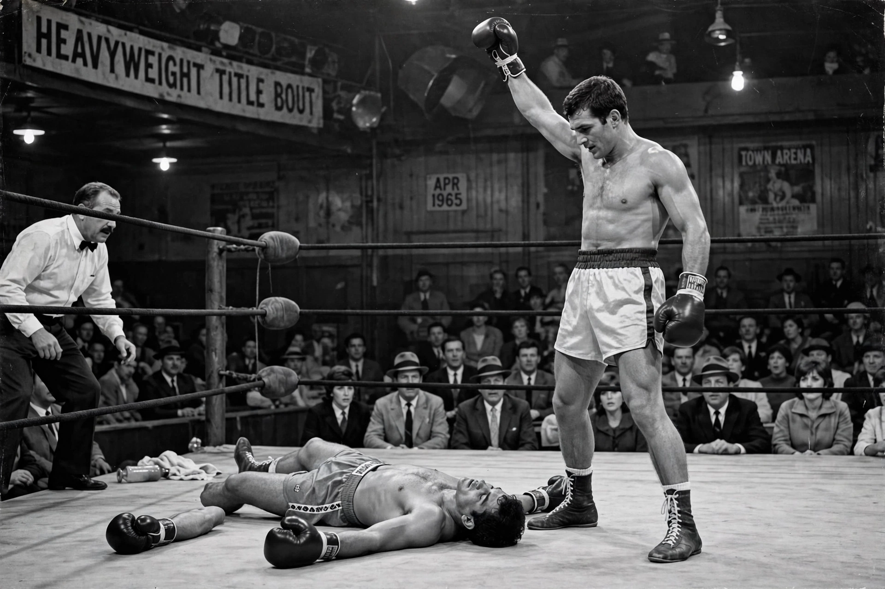

From Wikipedia, the free encyclopedia
| Muhammad Ali | |
|---|---|
 Muhammad Ali standing over a fallen Sonny Liston in their 1965 rematch, fist raised — the famous Neil Leifer photograph | |
| Born | Cassius Marcellus Clay Jr., 17 January 1942, Louisville, Kentucky, US |
| Died | 3 June 2016 (aged 74), Scottsdale, Arizona, US |
| Nickname | The Greatest |
| Division | Heavyweight |
| Record | 61 fights, 56 wins (37 KOs), 5 losses |
| Stance | Orthodox |
Muhammad Ali (born Cassius Marcellus Clay Jr.; 17 January 1942 – 3 June 2016) was an American professional boxer and activist. Nicknamed "the Greatest", he is regarded as one of the most significant sports figures of the 20th century and the greatest heavyweight boxer of all time. He won an Olympic gold medal in Rome in 1960 and became world heavyweight champion in 1964, aged 22, by defeating Sonny Liston.
Ali converted to Islam and changed his name in 1964. In 1967 he refused induction into the US Army on religious grounds during the Vietnam War, and was stripped of his titles and licence at the peak of his career; the Supreme Court overturned his conviction in 1971. Returning to the ring, he lost the "Fight of the Century" to Joe Frazier in 1971, then regained the title in the "Rumble in the Jungle" in Kinshasa, Zaire (1974), knocking out George Foreman with his "rope-a-dope" tactics, and won the "Thrilla in Manila" against Frazier in 1975. Beating Leon Spinks in 1978 made him the first three-time heavyweight champion.
Famous for his rhyming boasts ("float like a butterfly, sting like a bee") and his civil-rights and anti-war stands, Ali transcended boxing: he was named Sportsman of the Century by Sports Illustrated and lit the Olympic flame at Atlanta 1996. He spent his later years as a humanitarian and UN Messenger of Peace, living with Parkinson's disease until his death in 2016.
Categories: 1942 births | 2016 deaths | American male boxers | World heavyweight boxing champions